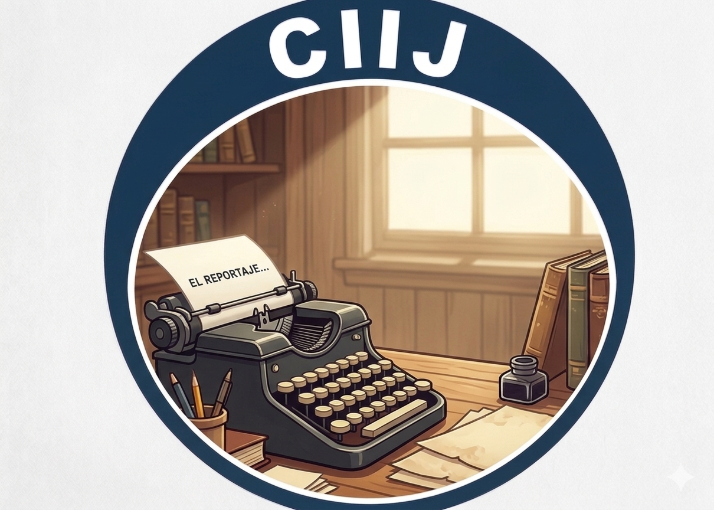

¿Qué leemos cuando leemos?
Una investigación sobre la triangulación de datos y cómo la lectura profunda transforma nuestra estructura cognitiva ante el fenómeno del "Brainrot".


La escritura del águila
Explora artículos sobre pedagogía, tecnología y el impacto de la IA en la educación contemporánea.
 💭 Filosofía
💭 Filosofía
Una investigación sobre la triangulación de datos y cómo la lectura profunda transforma nuestra estructura cognitiva ante el fenómeno del "Brainrot".